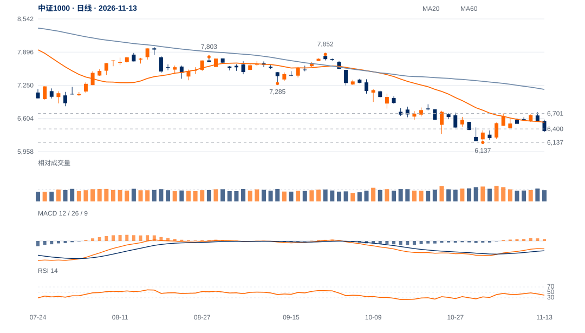

时间与推进不对称
10月30日至11月11日收盘波上涨8.25%，用时8日；随后两日回落4.68%，按点差约回吐前段61%。反向推进显著更快。
收盘波段已出现新的向下跟进：八日反弹的一半以上涨幅在两日内回吐，当前优先检验6400反抽能否收回及6137—6200承接。

查看大图 ↗先收回6400并保持，再检验6530；原6701两日条件不变。
6137结构底线失守，撤销本轮旧底保持解释。
10月30日至11月11日收盘波上涨8.25%，用时8日；随后两日回落4.68%，按点差约回吐前段61%。反向推进显著更快。
回撤段日均量约为反弹段0.96倍，接近原有参与水平，却产生较快下行；因此不能用“回调量稍低”推导卖压已经耗尽。
13日满足既定1.5ATR收盘反向门槛，11日收盘极点的波段终点在13日才确认；同时收6357.26，低于6400近端观察位。
20日OBV方向余额仍微正，6137旧低尚未失守；若6400迅速收回，当前下行可能退回低位区间，而非继续扩展。